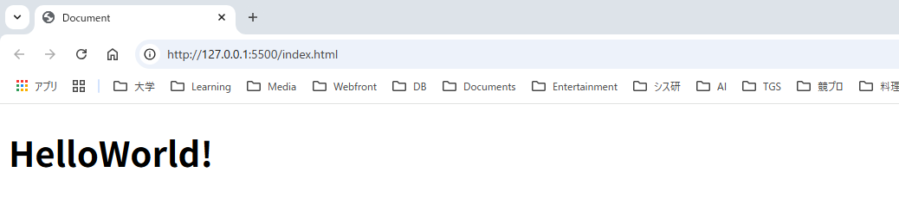
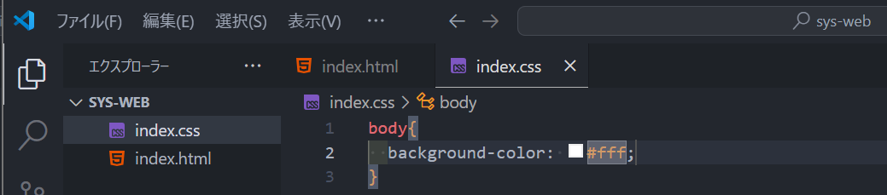

愛知工業大学 システム工学研究会 樋口 陽輝 (わだ わたる)
樋口陽輝（@hig270）
愛工大 工学部 電子情報工学専攻
岐阜工業高校 電子工学科
ヴァロ、旅行、資格取得、書道
Web、回路設計、組み込み
AI使い放題になる方法知ってる？ 僕はAIに楽させて貰ってますよ^^
短時間でなんとなく分かって貰えるように頑張ります。
正式名称は「Hyper Text Markup Language」。マークアップ言語の一つです。（先週に勉強会してたマークダウンの兄弟みたいなもんです） したがって、プログラミングより圧倒的に簡単なのです！
（ちなみにこの資料はマークダウンで書いて、HTMLに変換することでWebページとして公開しています。）
<body> <header> <div class="title"> <h1>樋口陽輝のWebページ</h1> </div> </header> <main> ⋮ </body>
一部例外のタグはありますが, 基本的には<〇〇>~~~</〇〇>といった形で, 始まりのタグと閉じタグがあります.
とは言ってもいろんなことが出来るので別ページで紹介します
正式名称は「Cascading Style Sheets」。 Webページを作るうえで、主に戦うことになるのはコイツです。 Webが触れる人は、CSSがめちゃくちゃ好きな変態さんか、CSSに悩まされすぎて大嫌いな人かに２分化されます。（ほとんどの人は後者）
スタイルを適用したいタグ { 適用したいスタイル: 色とか大きさとか; }
これじゃ意味分かんないよね...
body { background-color: #FFFFFF; } header div.title { background-color: orange; } h1 { font-size: 80px; font-weight: bold; color: rgb(0,0,0): }
あまりに多いので、必要最低限ぐらいだけ紹介します。
※ここに全部載ってます
基本的にみんなエディターはこれを使ってます
「command + ,」（「ctrl + ,」）で設定を開いてください。 入力欄に「auto」と入力し、「auto save」を「afterDelay」に変更
「command + s」を押さなくてもよくなります。
同じく、入力欄に「tab」と入力し、「Tab Size」を「2」に変更
デフォルトの４だと、ファイルが横長になって見づらいので変更しました
同じく、入力欄に「改行文字」と入力し、「Eol」を「\n」に変更
今後、Macの人と共同開発するときに大変なことになるので、先手を打っておきました。（詳しくは「改行文字 違い」で検索）
エクスプローラーまたはファインダーで、新しいフォルダを作成します。名前は「sys-web」にしてください。
VSCodeを開きます。
左上の「ファイル」から、「フォルダーを開く」を選択し、先ほど作成した「sys-web」を開いてください。
先ほど、Webページを公開するには幾つかのファイルをアップロードする必要があると紹介しました。 普通、Webページって複数の遷移先ページがありませんか？ 実はWebサイト制作では、ページ一枚ごとに一つのHTMLファイルが必要です。
こんな感じでファイルをアップロードしたとします。 作った人としては、「home.html」が、リンクをクリックして最初に見てほしいページです。 でも、表示するブラウザは、そんなこと知ったこっちゃありません。
sys-web ├── home.html ├── about.html ├── access.html ├── images | └── icon.png └── style ├── home.css ⋮
「home.html」を「index.html」に変更します。 こうすることで、ブラウザにも最初に表示するページが何か理解できるんですね～
sys-web ├── index.html ├── about.html ├── access.html ├── images | └── icon.png └── style ├── index.css ⋮
index.htmlを開きます。
このように表示されているはずです。 「!」とタイプし、予測変換が出ている状態で「Tab」を押します。
すると、なんかめっちゃ出ます。
ここで、一度ページを見てみましょう VSCode右下にから、「Go Live」を探してクリックしてください
真っ白な画面がブラウザで表示されましたか？
ここに文字を追加してみましょう。9行目に
と入力してみてください。自動でこんな感じになります

「h1」はそのページのタイトルに使うのが一般的です。 h（heading）シリーズは、「h1」 ~ 「h6」まであります。 （それぞれの使い方は実践編で感覚を掴んでください）
表示するだけなら、「HelloWorld!」のみでも構いませんが、 HTMLの"コンテンツ（文字）をタグで意味付けする"という特性上、 すべてのコンテンツには何かしらのタグを付けることが推奨されます。
一部のみ抜粋して紹介します。
<html lang="en">
使用している（自然）言語を設定します。
<title>Document</title>
ブラウザのタグに表示される、ページ名（タイトル）を指定できます。
言語が日本語(jp)であることを記してください。
ページ名を「はじめてのHTML」としてください。
<!DOCTYPE html> <html lang="jp"> <head> <meta charset="UTF-8"> <meta name="viewport" content="width=device-width, initial-scale=1.0"> <title>はじめてのHTML</title> </head> <body> <h1>HelloWorld!</h1> </body> </html>
先ほどと同じ手順でファイルを作成してください。 ファイル名は「index.css」としてください。
こうなりましたか？
<link rel="stylesheet" href="index.css">
を追加してください。
body -> Enter -> { -> Enter -> bgc -> Tab
と入力してみましょう。（bgcは、background-colorを省略した入力方法）

スタイルを適用する要素（ここでいう「body」）をセレクタと呼びます
「#fff」の所にカーソルを合わせてみてください。 なんか出てくるので、ここで自由に色を変えてみましょう！
色変えを試してみたら, 白に戻しておいてください.
（h1のHTML要素の）背景色を 黒色（blackまたは#000000またはrgb(0,0,0)）にしよう
文字の色を 白色（whiteまたは#ffffffまたはrgb(255,255,255)）にしよう。
文字の大きさを100pxにしよう。
h1{ color: white; font-size: 100px; background-color: black; }
h1の上に異常に広い隙間がありますね？
なにが起こっているのか確認してみましょう
Webページの構造や動作、デザイン、ネットワーク通信などをリアルタイムで確認できるツール
「F12」を押す。または右クリック→検証
右上の歯車マークから、設定→言語→日本語を選択しておきましょう
左上の、正方形に矢印が付いているマークを押してみてください。 これで、各要素に適用されているmarginやpaddingを確認できます。 調べてみると、h1要素にmarginが、html要素にpaddingが適用されていることがわかりますね
実は、ブラウザには開発者がCSSを書かなくてもいい感じの見た目になるようにするためのCSS（ユーザーエージェントスタイルシート）が勝手に設定されています。 ありがたく感じるかもしれませんが、もしこれがブラウザごとに異なっていたらどうなるでしょう？ 「chromeとsafariで見た目が違う！」なんてことになりかねませんね？ 普通に余計なお世話なのでこんなもの消してしまいましょう。
デフォルトCSSに書かれている余計なスタイルの一部を上書きして無効化します。そのためのCSSを「リセットCSS」と呼びます.
* { margin: 0; padding: 0; box-sizing: border-box; }
「*」は、すべての要素に適用するという意味の特別なセレクタです （全称セレクタ）
なんか見づらくないですか？（特に左端） あまり気にしたことはないかもしれませんが、文字を置くための要素に左右にpaddingが設定されていないWebページは、たぶん存在しません。 h1に対して、左右のpaddingを適用してあげましょう。
h1{ padding: 0 2rem; }
Webページをデザインするときは, ブロックを配置していって,「ここにはこれを表示させたいな」「ならこの要素をこういう風に配置しよう」「このブロックの配置はあのサイトを真似したレイアウトにするとかっこいいんじゃないか」みたいな感じで進めていきます
<body> <header><p>ヘッダー</p></header> <main><p>メイン</p></main> <footer><p>フッター</p></footer> </body>
body{ background-color: white; } header{ background-color: red; } main{ background-color: green; } footer{ background-color: blue; }
さっきのh1のときの話と同じことです. pで囲まなくても文字の表示はできますが, すべてのコンテンツはタグで囲むことを推奨されています. pは, 「文を表示します」という意味のタグです.
ファイルを作るのと同じ要領で、「新しいフォルダー」を選択してください。名前は「images」です。
下のリンクから、すべての画像をダウンロードしてください。 ロゴダウンロードリンク（Google Drive）
ドラッグアンドドロップで移動できます。
<header> <img src="./images/sysken_icon.svg" alt="sysken_logo"> </header>
画像やファイルを使用するには、ディレクトリ内でファイルが置かれている場所（path）を教えてあげる必要があります。
なお、クラウドストレージ等に保存されている場合は、そのURLを記述することもできます。
「/」が書かれるごとに一階層下を参照 「.」は、自分がいる位置を表す
src="./images/photo.png"
「../」が書かれるごとに一階層上を参照
src="../images/photo.png"
このようなディレクトリ構成でページを制作しているとして、 「access.html」が、「access.css」を参照したいです。
<link rel="stylesheet" href="ここに記述すべきパスを書いてください">
sys-web ├── index.html ├── pages | ├── about.html | └── access.html ├── images | └── icon.png └── style ├── index.css ├── about.css └── access.css
<link rel="stylesheet" href="../style/access.css">
大きさを変更します。header{}の下にこれを追加してください。
header img{ width: 140px; height: auto; }
headerタグの中のimgタグにスタイルを指定するという意味です。 このようなセレクタを「子孫セレクタ」といいます。
headerに対して、以下を追加してください。
padding: 3px 10vw;
headerのスタイルをこのように変更してください。
background-color: rgb(210, 255, 255);
paddingに２つだけ値を与えると、 １つ目（3px）が上下の余白、 ２つ目（10vw）が左右の余白になります。
デベロッパーツールを開いて、ページの横幅を変更してみてください。 左右の余白の幅がページ幅に比例して変化することが分かりますか？ vwは、ページの幅の◯%という意味です。
<footer> <h2>システム工学研究会</h2> </footer>
footer h2{ color: white; text-align: center; padding: 10px; }
「index.html」の21行目から59行目をコピペしてください。
<a href="https://x.com/set_official" target="_blank"> <img src="./images/x_icon.png" alt="X (Twitter)" width="20" height="20" /> </a>
ロゴを置いたときと同じです. アイコンの画像を, 20px * 20px で配置しています.
aの要素は, クリックすると指定の場所や別ページに遷移させることが出来る領域です. 文字列をaタグで囲むことで, リンクをクリックして画面遷移するように感じますが, どちらかというと文字列ではなくa要素をクリックしています. つまり, aタグで何を囲っても構わないのですね～
<a href="https://x.com/set_official" target="_blank">
(あ, タグの中でいろいろ指定してるやつらをHTML属性っていいます)
もしこれを付けないと, 今ページを開いているタブがリンク先を表示します.
この属性は, 付けてあげると親切になる場合と, 余計なお世話になる場合があります. 自分が使ったときのことを考えて,リンクは作ってあげましょう
よって, 今作ったのはSNSアイコンの画像をクリックすると, 新しいタブでSNSアカウントのページへ遷移するボタン(ハイパーリンク)ということです. 少し面倒ですが, よく使うので紹介しました.
要件
</li> <li> <a href="https://qiita.com/organizations/sysken" target="_blank" ><img src="./images/qiita_icon.png" alt="qiita" width="20" height="20" /></a> </li> </ul>
「シス研公式アカウント」の下に, 「日々の活動を投稿中!」と表示させましょう
⋮ <h3>シス研公式アカウント</h3> <p>日々の活動を発信中!</p> <ul> ⋮
footer p{ color: white; }
作った人の名前を書く慣習があるため, とりあえず付けとけって感じです.
↑こんな感じのをページの一番下に記載してあることがほとんどです
<p>© 2025 Higuchi Haruki</p>
「©」は, ©をWebページに表示するための特殊文字です.
ページの一番下の中心に, コピーライトを配置します
<footer> ⋮ <p>© 2025 sysken</p> </footer>
footer p{ color: white; text-align: center; font-size: 10px; padding: 3px 0; }
困りました. pタグにスタイルを適用するとさっき書いたpタグの中身にもコピーライト用のスタイルが適用されてしまいますね...
今回はpタグの中でもcopyrightを表示するためのタグにのみ, さっき当てたスタイルを適用したいので, copyrightを表示させているpタグに対して, 「copyright」クラスを付与させます.
<p class="copyright">© 2025 sysken</p>
さっき追加したpタグのスタイルは課題の状態(color: white;のみ)に戻して, これを追加してください.
.copyright{ text-align: center; font-size: 10px; padding: 3px 0; }
.クラス名{ }
このようなセレクタの指定方法を, クラスセレクタといいます.
これは, タグに対してスタイルを指定しているのではありません.
例えば, copyrightクラスを「h2」タグに適用してみると, h2要素もcopyrightと同じスタイルが適用されます.
このように, そのクラスを持つ要素すべてにスタイルを適用します.
copyrightクラスには,
color: white;
を記述していないのに, h2もpも文字は白いですね
ここに着目して考えます
(デフォルトCSS{ }) *{ } footer{ } footer p{ } .copyright{ }
こういう順番で記述されています. イメージを表すとこんな感じです.
をフッター内で一つのみ使用して, フッター内のテキストカラーを全て白色にしてください. (不要なものは消去してください)
footer{ background-color: blue; color: white; }
背景色を紺色(#0000A0 または rgb(0,0,160))に変更してください.
フッター内のコンテンツの余白が, 上下は3px, 左右はそれぞれ画面の横幅の10%分となるようにスタイルを追加してください.
footer{ background-color: #0000A0; color: white; padding: 3px 10vw }
デフォルトCSSが「li」タグに対して適用させています. さっきまでは, 表示領域外に配置されていたため見えませんでした. 邪魔なので消してしまいましょう.
デフォルトCSSに
li { list-style: disc; }
↑が記載されているので, スタイルを上書きします.
li { list-style: none; }
予約語が存在する要素(header, main, footerなど)内で,複数コンテンツを並べるときによく使う手法が, div要素によるブロック分けです.
今回は, main要素内に5つのコンテンツを表示させたいので, 5つのdiv要素を用意しましょう.
各コンテンツを表示させるためのブロックたちを,「コンテナ」と呼ばれることもあります.
main要素内を書き換えます.
<main> <div id="information"><h2>おしらせ</h2></div> <div id="about"><h2>団体概要</h2></div> <div id="activity"><h2>活動について</h2></div> <div id="attraction"><h2>シス研の魅力</h2></div> <div id="fixtures"><h2>備品一覧</h2></div> </main>
「一意な識別子」というのが重要で, これを使用することで次回実装するある機能が使えるようになります.
国語の教科書の文章で例えて言うと, 「header」は題名と作者 「main」は文章本体 「section」は段落 「footer」は作者についての紹介とか難しい単語の補足の部分
って感覚でいいと思います.
divを選択した状態で, command(ctrl) + d で,次のdivをどんどん選択させると, 一気に書き換えることができて便利です.
<main> <section id="information"><h2>おしらせ</h2></section> <section id="about"><h2>団体概要</h2></section> <section id="activity"><h2>活動について</h2></section> <section id="attraction"><h2>シス研の魅力</h2></section> <section id="fixtures"><h2>備品一覧</h2></section> </main>
こんな感じで, できるだけdivタグは使わないようにして, 意味のあるより適したタグを使用することを心掛けることが推奨されています.
<body> <div class="wrapper"> ⋮ </div> </div>
このように表示領域を包みこんで, 表示領域全体に対するスタイルを指定するための要素を用意することがあり,ラッピングするので「ラッパー」と呼ばれています.
bodyにスタイルを適用するのとほとんど変わりませんが, 表示の大きさに関することはラッパーに適用する(ことが多い...?)
.wrapper{ width: 100%; }
明示的に, 表示範囲がブラウザウィンドウの100%幅であることを示します
スタイルを小さい領域だけで分けて考えることができるようになるので, 制作･管理が楽になります.
レスポンシブデザインに対応しやすくなります.(詳細は次回話します)
横幅を変更させてみます. するとどうでしょう. 横幅が流石に広すぎませんか?
コンテンツを表示する幅を, 1280pxに固定してしまおうと思います.
ここで, さっき登場したコンテナの登場です.
コンテナという概念を知ると, これらはコンテナとして使用するためのタグだということが分かると思います.
main(メインコンテンツ表示用のコンテナ)の中に, さらにコンテナを作成し, その中に「section」のコンテンツたちを入れ込みます.
<main> <div class="contents_container"> <section id="information"><h2>おしらせ</h2></section> <section id="about"><h2>団体概要</h2></section> <section id="activity"><h2>活動について</h2></section> <section id="attraction"><h2>シス研の魅力</h2></section> <section id="fixtures"><h2>備品一覧</h2></section> </div> </main>
.contents_container{ width: 1024px; margin: 0 auto; padding: 0 44px; }
※「auto」は残りの領域を左右同じ大きさで分割です.
headerとfooterの中身を, コンテナ(contents_containerクラスの付いたdiv要素)に入れ込んでください.
先ほどまでの工程で入れた, headerとfooterのpaddingを削除してください.
<header> <div class="contents_container"> <img ...> </div> </header> ⋮ <footer> <div class="contents_container"> <h2>システム工学研究会</h2> ⋮ </div> <footer>
それぞれのコンテナの領域が分かりやすいように背景色を分けていましたが, もう必要無いので白に戻しておきましょう.
mainに適用しているスタイルを削除してください.
本日はここまで! 来週は要素を横並びに配置する方法や, ページを公開する方法について勉強しましょう.